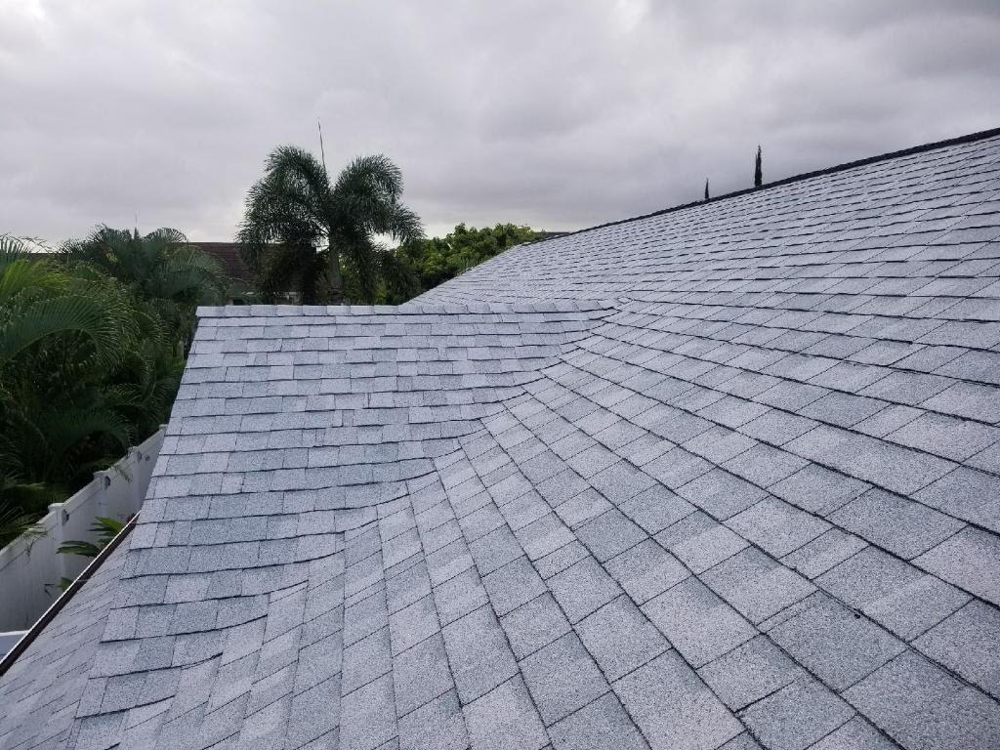
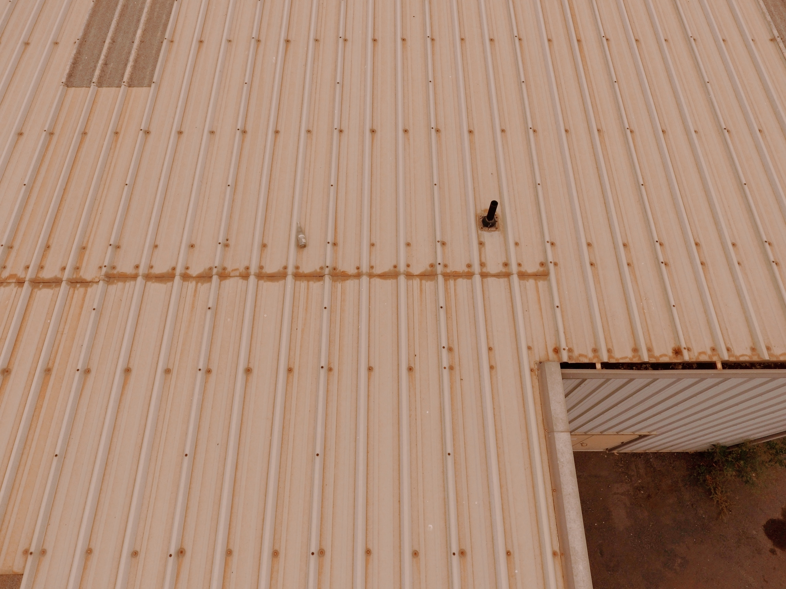
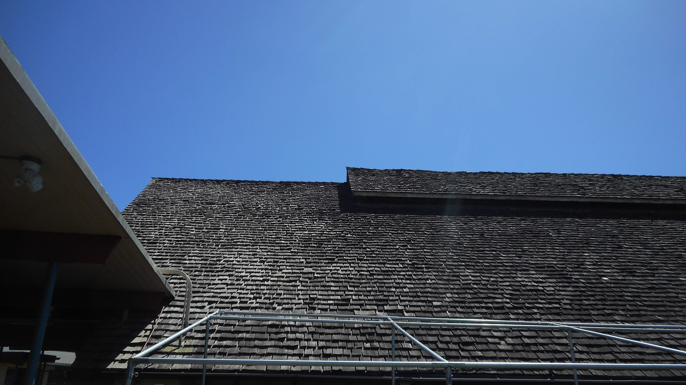

Why Underlayment Matters
Roofing underlayment is your roof's second line of defense against water intrusion. If a shingle blows off in a storm or an ice dam backs up water under the shingles, underlayment is what keeps the water out of your home. Building codes require it, and the type you choose directly impacts how long your roof system lasts.
There are three main categories: synthetic underlayment (the modern standard), asphalt-saturated felt (the traditional choice), and self-adhering ice & water shield (for vulnerable areas like valleys, eaves, and penetrations).

Tiger Paw Synthetic Underlayment
The industry favorite among roofers. Tiger Paw is lightweight, lays flat without wrinkles, and provides excellent traction when walking on it — a huge safety factor on steep roofs.
- Won't wrinkle, buckle, or crack
- Excellent foot traction (even wet)
- Covers 1,000 sq ft per roll
- Compatible with all GAF shingle systems
- UV stable for up to 6 months of exposure

RoofRunner Synthetic Underlayment
CertainTeed's synthetic option offers the same wrinkle-free, walkable surface as Tiger Paw at a competitive price. Pairs well with CertainTeed's Landmark shingle system.
- Lightweight polypropylene construction
- Non-slip walking surface
- Tear-resistant and water-shedding
- 1,000 sq ft coverage per roll
- 6-month UV exposure rating

30# Asphalt-Saturated Felt Paper
The traditional underlayment that's been used for decades. Still code-compliant and budget-friendly, but synthetic has largely replaced it in professional use due to durability and safety concerns.
- Lowest cost underlayment option
- Meets building code requirements
- Available at any supply house
- Heavier and harder to work with than synthetic
- Can wrinkle and tear when wet

StormGuard Ice & Water Shield
Self-adhering, waterproof membrane required by code in ice dam zones (first 3 feet from eave). Also essential for valleys, around penetrations, and low-slope transitions.
- Fully waterproof — seals around nail penetrations
- Self-adhering (no fasteners needed)
- Required by code at eaves in cold climates
- Essential for valleys and pipe penetrations
- 200 sq ft per roll
Underlayment Comparison
| Type | Cost/Roll | Coverage | Waterproof? | Best Use |
|---|---|---|---|---|
| Synthetic | $75 – $100 | 1,000 sq ft | Water-resistant | Full roof deck (standard) |
| 30# Felt | $25 – $40 | 216 sq ft | Water-resistant | Budget projects |
| Self-Adhering (I&W) | $85 – $120 | 200 sq ft | Yes — fully waterproof | Eaves, valleys, penetrations |
When to Use Each Type
Synthetic Underlayment (Use This by Default)
Synthetic is the modern standard for full-deck underlayment under asphalt shingles. It's lighter, stronger, safer to walk on, and covers more area per roll than felt. The only reason to use felt instead is cost — and the difference on a typical roof is only $100–200.
Ice & Water Shield (Required in Many Areas)
Building codes in cold-climate zones require self-adhering ice & water shield along the eaves (typically the first 24" past the interior wall line). Smart roofers also use it in valleys, around skylights, pipe boots, chimney flashing, and any roof-to-wall transitions.
Felt Paper (Budget Option)
If budget is extremely tight, 30# felt is still code-compliant and functional. Use 30# (not 15#) for better tear resistance. Just know that it's heavier, wrinkles when wet, and offers less traction than synthetic — making steep-slope work more dangerous.